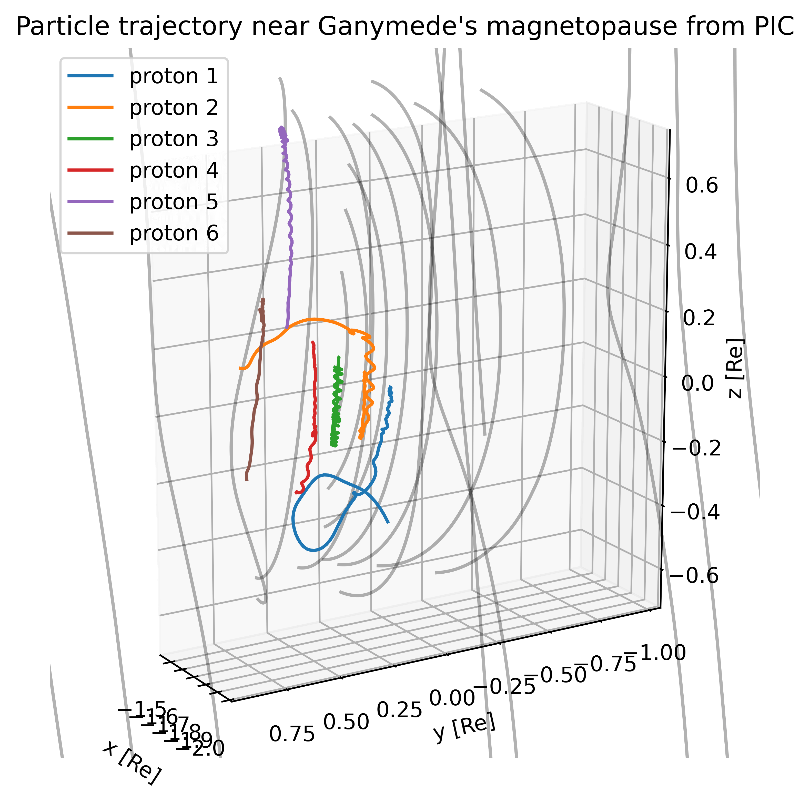

Tracing particle from PIC

This example shows how to trace charged particles in the structured SWMF outputs from an MHD-EPIC simulation of Ganymede. For more details about the field file format, please checkout Batsrus.jl.
using Statistics: mean
using Batsrus
using TestParticle
using OrdinaryDiffEq
using FieldTracer
using PyPlot
## Utility functions
function initial_conditions(i)
j = i - 1
[x[xc_], y[yc_+j], z[zc_], Uix[xc_,yc_+j,zc_], Uiy[xc_,yc_+j,zc_], Uiz[xc_,yc_+j,zc_]]
end
"Set initial conditions."
function prob_func(prob, i, repeat)
remake(prob, u0=initial_conditions(i))
end
## Data processing
filename = "3d_var_region0_0_t00002500_n00106468.out"
data = readdata(filename)
var = getvars(data, ["Bx", "By", "Bz", "Ex", "Ey", "Ez", "uxs0", "uys0", "uzs0", "uxs1", "uys1", "uzs1"])
const RG = 2634e3 # [m]
x = range(extrema(data.x[:,:,:,1])..., length=size(data.x, 1)) .* RG
y = range(extrema(data.x[:,:,:,2])..., length=size(data.x, 2)) .* RG
z = range(extrema(data.x[:,:,:,3])..., length=size(data.x, 3)) .* RG
B = zeros(Float32, 3, length(x), length(y), length(z)) # [T]
E = zeros(Float32, 3, length(x), length(y), length(z)) # [V/m]
# Convert into SI units
B[1,:,:,:] .= var["Bx"] .* 1e-9
B[2,:,:,:] .= var["By"] .* 1e-9
B[3,:,:,:] .= var["Bz"] .* 1e-9
E[1,:,:,:] .= var["Ex"] .* 1e-6
E[2,:,:,:] .= var["Ey"] .* 1e-6
E[3,:,:,:] .= var["Ez"] .* 1e-6
## Initial conditions
Uex, Uey, Uez = var["uxs0"] .* 1e3, var["uys0"] .* 1e3, var["uzs0"] .* 1e3
Uix, Uiy, Uiz = var["uxs1"] .* 1e3, var["uys1"] .* 1e3, var["uzs1"] .* 1e3
xc_ = floor(Int, length(x)/2) + 1
yc_ = floor(Int, length(y)/2) + 1
zc_ = floor(Int, length(z)/2) + 1
stateinit_e = [x[xc_], y[yc_], z[zc_], Uex[xc_,yc_,zc_], Uey[xc_,yc_,zc_], Uez[xc_,yc_,zc_]]
stateinit_p = [x[xc_], y[yc_], z[zc_], Uix[xc_,yc_,zc_], Uiy[xc_,yc_,zc_], Uiz[xc_,yc_,zc_]]
param_electron = prepare(x, y, z, E, B, species=Electron)
tspan_electron = (0.0, 0.1)
param_proton = prepare(x, y, z, E, B, species=Proton)
tspan_proton = (0.0, 10.0)
trajectories = 5
prob_p = ODEProblem(trace!, stateinit_p, tspan_proton, param_proton)
ensemble_prob = EnsembleProblem(prob_p, prob_func=prob_func)
sol_p = solve(ensemble_prob, Vern9(), EnsembleThreads(); trajectories)
## Visualization
using3D()
fig = plt.figure(figsize=(10,6))
ax = fig.gca(projection="3d")
## Field tracing
for i in 1:10:length(x)
xs, ys, zs = x[i], 0.0, 0.0
x1, y1, z1 = trace(B[1,:,:,:], B[2,:,:,:], B[3,:,:,:], xs, ys, zs, x, y, z, ds=0.2, maxstep=1000)
line = ax.plot(x1 ./ RG, y1 ./RG, z1 ./ RG, "k-", alpha=0.3)
end
for i in 1:10:length(y)
xs, ys, zs = x[xc_], y[i], z[zc_]
x1, y1, z1 = trace(B[1,:,:,:], B[2,:,:,:], B[3,:,:,:], xs, ys, zs, x, y, z, ds=0.2, maxstep=1000)
line = ax.plot(x1 ./ RG, y1 ./RG, z1 ./ RG, "k-", alpha=0.3)
end
n = 200 # number of timepoints
ts = range(0, stop=tspan_proton[2], length=n)
for i = 1:trajectories
if sol_p[i].t[end] < tspan_proton[2]
ts⁺ = range(0, stop=sol_p[i].t[end], length=n)
ax.plot(sol_p[i](ts⁺,idxs=1) ./ RG, sol_p[i](ts⁺,idxs=2) ./ RG, sol_p[i](ts⁺,idxs=3) ./ RG, label="proton $i", lw=1.5)
else
ax.plot(sol_p[i](ts,idxs=1) ./ RG, sol_p[i](ts,idxs=2) ./ RG, sol_p[i](ts,idxs=3) ./ RG, label="proton $i", lw=1.5)
end
end
#ax.plot(sol_p[1,:], sol_p[2,:], sol_p[3,:], label="proton")
ax.legend()
title("Particle trajectory near Ganymede's magnetopause from PIC")
xlabel("x [Rg]")
ylabel("y [Rg]")
zlabel("z [Rg]")
ax.set_box_aspect([1.17,4,4])
TestParticle.set_axes_equal(ax)
This page was generated using DemoCards.jl.